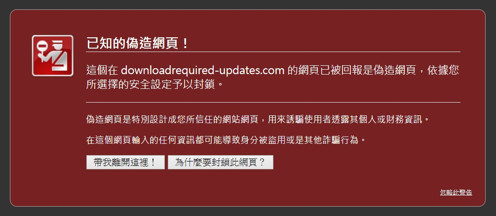

我們一直想找出更好的方法，保護使用者免於惡意軟體的危害。Firefox 多年來透過 Google 的「安全瀏覽 (Safe Browsing)」─ 釣魚與惡意軟體的防護技術，避免使用者在不知情的狀況下進入危險網站。此防護功能即根據 Firefox 所下載的釣魚和惡意網站清單，進而檢查使用者現正瀏覽的網站 (可前往此頁面以進一步了解)。
Firefox 會越來越安全。

網頁防護功能範例圖
在此之前，Firefox 僅限取得惡意網站的回報清單。但現在安全瀏覽服務也能監控惡意的已下載檔案了。甫於 7 月 22 日發佈的最新版 Firefox 可比對「已下載的檔案」與「惡意檔案清單」，並進一步阻絕相關檔案感染使用者的系統。
而將於 9 月發表的下一版 Firefox，更可進一步阻絕 Windows 環境中所發生的惡意檔案下載作業。只要使用者下載應用程式檔案，Firefox 隨即驗證該檔案的簽章。若該檔案已完成簽署，Firefox 會接著比對已知的安全發行廠商清單。如果未能將該檔案辨識為「安全 (允許)」，或依清單確認為「惡意軟體(阻絕)」，Firefox 就會寄發檔案的部份後設資料 (Metadata) 至 Google 的安全瀏覽服務，詢問該檔案是否安全。另必須說明的是，此線上檢查僅於 Windows 版本的 Firefox 執行，且只針對「不具備已知安全發行廠商」的已下載檔案。大多數 Windows 版本的常見/安全軟體均已簽署完畢，因此進行這類最後檢查的機率不大。
在初步測試中，我們估算這個新防護功能，約可再減少溜過 Firefox 防護功能的惡意軟體總數達 50 %。可算是極佳的防護效率。
當然，就算有幾個下載檔案並不符合安全清單，而你也不想把相關資料寄送給 Google 知道，亦可關閉惡意軟體防護功能。但我們認為大多數的人都極為重視惡意軟體的問題，也期待此新功能可順利於背景中運作，保護大家的瀏覽安全。
另可參閱 Monica 的部落格文章以進一步了解。